악 녀
은화기숙학원
해당 내용은 테마를 다 이용한 고객님을 위한 설명 사이트입니다.
스포일러를 당할 수 있으며 위 내용, 주소를 유출할 시
법적인 책임을 물을 수 있습니다.
이에 동의하십니까?
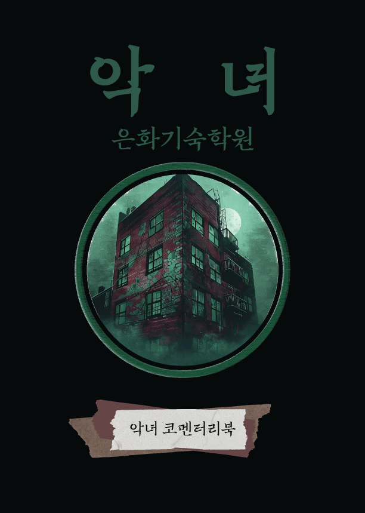
▾ scroll
악 녀
은화기숙학원
진실은 지워지고, 기억은 왜곡된다.
가장 가까운 곳에서 시작되는 공포.
익숙한 공간이 낯설게 느껴지는 순간, 당신의 안전한 일상은 무너진다.
추악한 사실을 잊은 자, 그리고 그 진실을 밝히려는 자.
믿었던 모든 것이 흔들리고, 남은 건 끝없는 불신과 두려움뿐.
어둠 속 숨겨진 진실은 깨어났다.
Characters
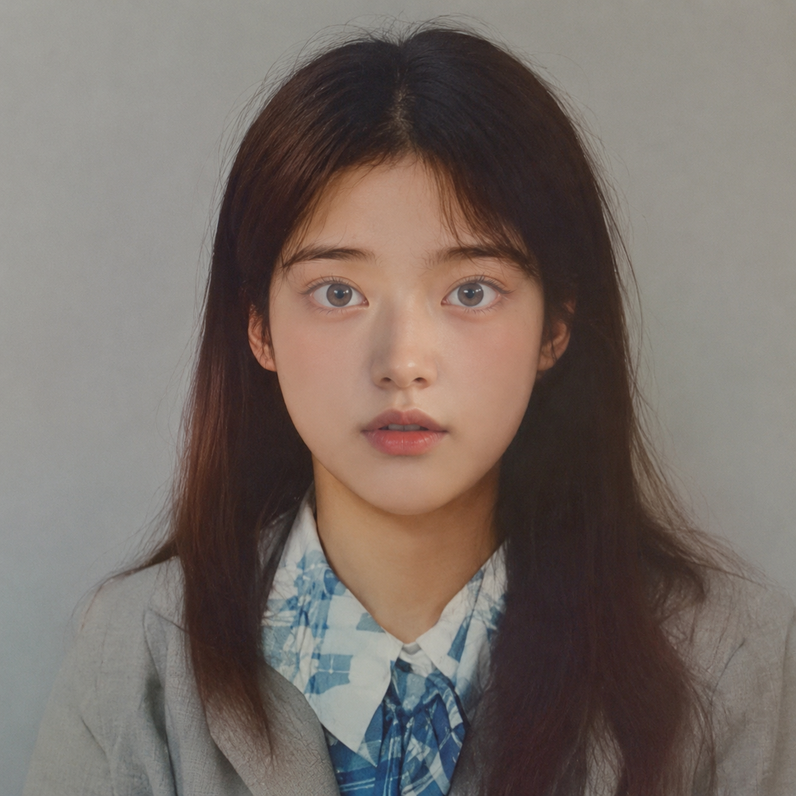
조소민
피해자
은화기숙학원의 재학생으로, 민유정과 이화정의 끊임없는 괴롭힘 속에서 끝내 마음의 문을 닫은 소녀. 경비원 아저씨만이 손주처럼 그녀를 아꼈지만, 그 따뜻함마저 붙잡지 못한 채 세상과 작별하게 된다.
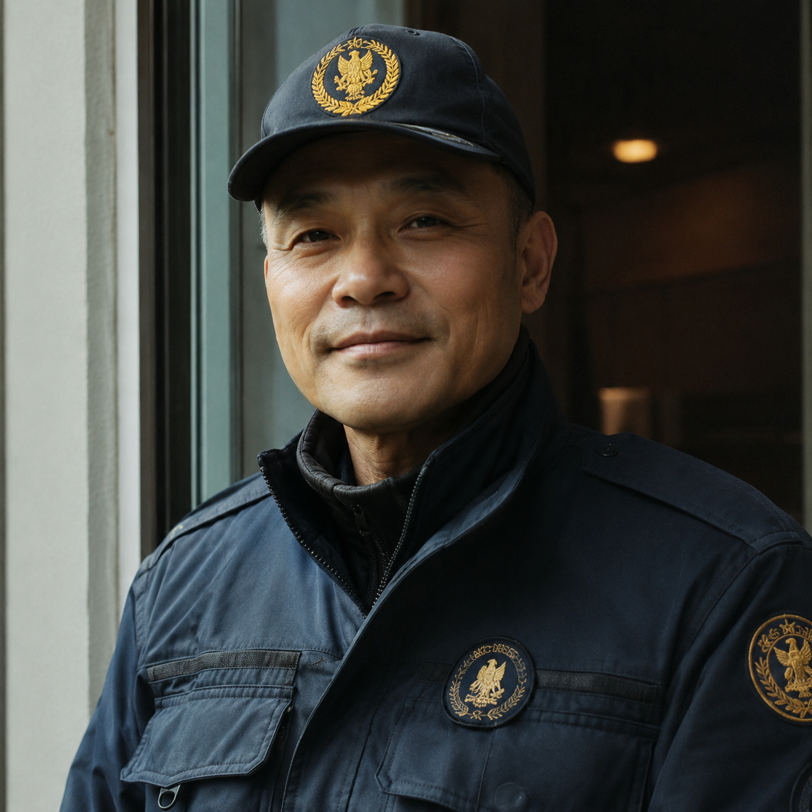
경비원
복수자
은화기숙학원의 경비원으로, 학교에서 유일하게 소민을 따뜻하게 챙겨준 인물. 그는 소민을 괴롭히던 민유정과 이화정에게 복수하기 위해, 자신의 손으로 부적을 제작해 죽은 소녀의 영혼을 불러내고 마침내 복수를 완성한다. 자신의 양심보다 소민을 향한 연민이 앞섰던, 슬프도록 인간적인 복수자.
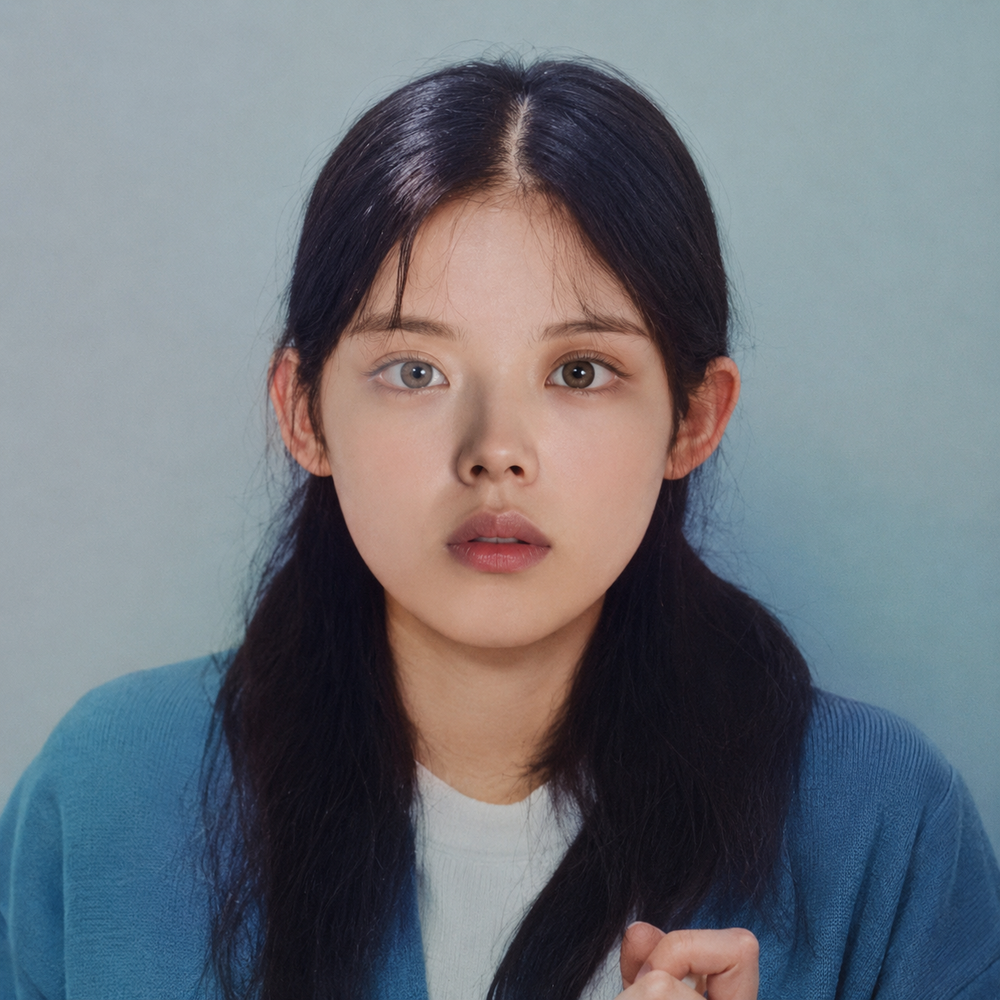
민유정
가해자
은화기숙학원의 학생으로, 아무런 이유 없이 조소민을 괴롭혀 깊은 상처를 남긴 인물. 소민이 세상을 떠난 뒤에도 죄책감 하나 없이 일상을 이어가던 그녀는, 결국 경비원이 꾸민 알 수 없는 기묘한 사건 속에서 자신이 저질렀던 잔혹함의 대가를 맞이하게 된다.
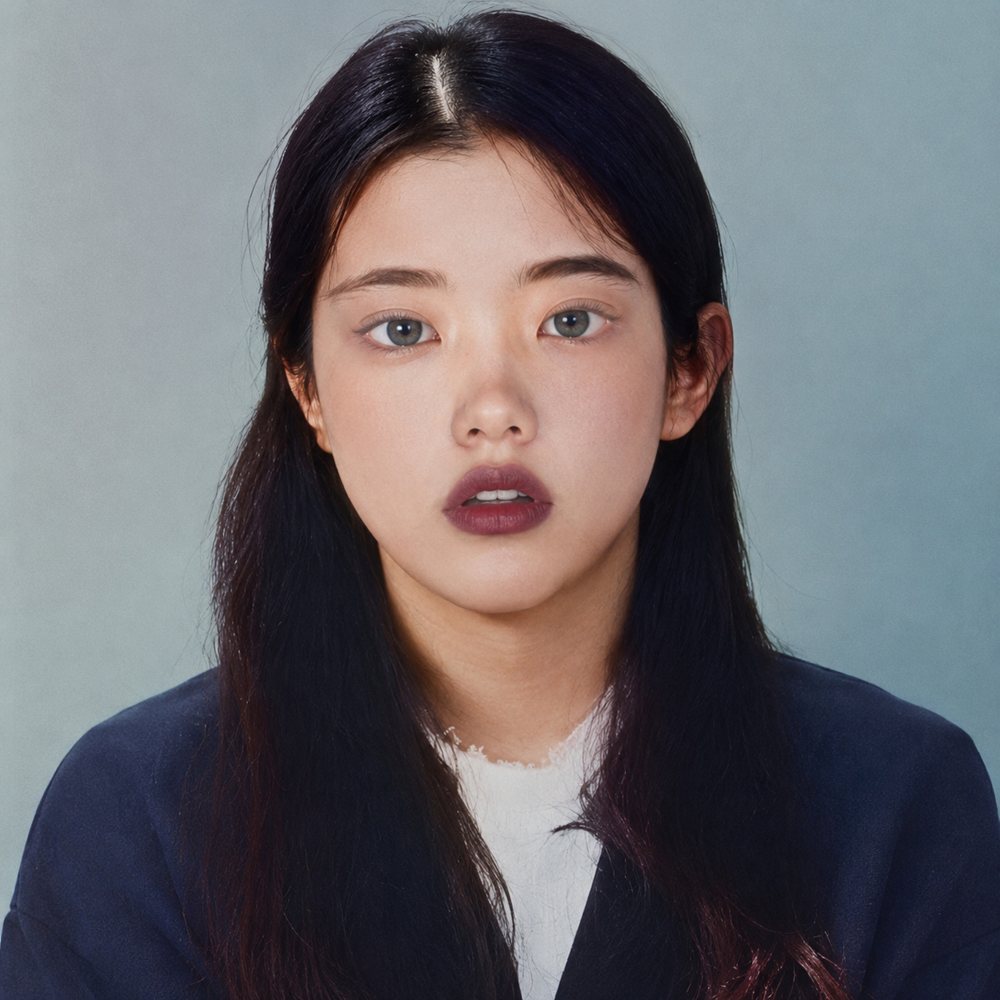
이화정
방관자
민유정의 절친이자, 조소민을 괴롭히던 일에 동조하고 방관했던 은화기숙학원의 학생. 그 날, 어딘가에서 들려오는 익숙한 목소리를 따라가다 흔적도 없이 사라진다. 그날 이후 그녀의 행방은 누구에게도 알려지지 않았고, 신문에는 단 한 줄의 실종 기사만이 남았다.
World
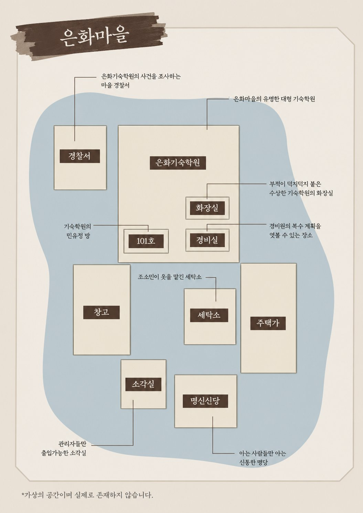
경찰서 취조실
영화의 시작과 끝에 등장하는 취조실입니다. 이 곳에서 민유정이 사건을 진술하며 과거의 이야기가 시작되고, 영화 후반부에서 그녀는 경찰에게 신고하지만, 그 경찰마저 사람의 모습을 한 악귀였음이 드러납니다. 결국 경찰서에서 마지막 복수를 당하며 이야기는 막을 내립니다.
화장실
조소민이 생을 마감한 장소입니다. 경비원은 유정과 화정이 스스로 소민의 영혼을 불러오도록 유도하기 위해, 화장실에 조소민의 신분증과 부적을 붙여두었습니다. 또 순찰을 가장해 화장실을 드나들며 그들을 감시했고, 일부러 열쇠를 떨어뜨려 두 사람이 자연스럽게 조소민의 물건을 손에 넣도록 유도했습니다.
민유정 방 (101호)
기숙학원 101호에 위치한 민유정의 개인 기숙사 방입니다. 과거 회상이 시작되는 장소로, 유정의 방에 놀러온 화정과 유정은 평소처럼 공부를 마친 뒤 잠자리에 들 준비를 하던 중, 어딘가에서 들려오는 알 수 없는 비명을 듣게 됩니다. 이를 계기로 방을 나선 두 사람은 경비원이 설계한 계략 속으로 점점 빠져들게 됩니다.
명신신당
경비원이 복수 계획을 완성시키는 장소이자, 모든 의식의 근원이 되는 공간입니다. 그는 조소민의 영혼을 불러내기 위해 무당에게 의뢰했으나 거절당하자, 새벽에 몰래 침입해 부적 제작에 필요한 물건을 훔칩니다. 이후 민유정을 속이기 위해 가짜 의뢰서와 신당 일지를 남겨두었고, 훗날 유정은 이 단서를 따라 신당을 방문하게 됩니다.
세탁소
마을의 오래된 세탁소입니다. 세탁소 주인은 한 달 전, 조소민이 피가 묻은 옷을 맡긴 뒤 찾아가지 않아 이상하게 여겼습니다. 이후 민유정은 조소민의 영혼을 없애기 위해, 경비원이 조작한 의뢰서를 단서로 삼아 이곳에 몰래 침입하게 됩니다.
소각실
조소민의 명찰이 태워지는 장소이자, 영혼을 부르기 위한 의식의 마지막 단계가 이루어지는 공간입니다. 유정은 '죽은 자의 물건을 태워 제단에 올리라'는 조작된 의뢰서를 따라 이곳에서 명찰을 불태우지만, 그것은 퇴마가 아닌 '부름'의 의식이었습니다.
Story
은화 마을에서 수많은 영재를 배출해 온 은화 기숙학원. 그러나 학원 내에서 벌어지는 폭력에 대해서는 소문이라도 날까 철저히 함구했고, 오직 실적 외에는 관심조차 두지 않았다. 그 폭력의 중심에는 학생 민유정이 있었다. 유정은 일상처럼 화장실에서 조소민을 괴롭혔고, 친구 이화정은 마치 구경거리라도 난 듯 웃기만 했다.
조소민이 고민을 들어주고 힘이 되어주던 경비원에게 억지로라도 마지막 웃음을 지어 보이던 그날, 경비원은 순찰 중에 화장실에서 그녀의 싸늘한 주검을 발견하게 된다.
이후 경비원은 조소민이 당해온 일과 그 주동자가 누구인지 알고 있는 유일한 사람으로서 가만히 있을 수 없었다.
"내가 지켜줬어야 했는데…"
그는 그녀를 지켜주지 못했다는 죄책감 속에 잠들었다 깨어나기를 반복했다. 어느 날, 그는 발신인이 없는 의뢰서 한 통을 써서 '명신신당'으로 보냈다.
며칠 뒤, 답장이 도착했다.
그는 답장을 여러 번 읽었지만, 포기할 수 없었다. 밤마다 기숙학원 근처의 낡은 헌책방을 돌며 귀신, 부적, 의식에 관한 책을 찾아다녔다. 어둠 속에서 책을 읽고 부적을 태우며 직접 의식을 치러보기도 했다. 그는 마침내 악귀를 불러오는 부적의 구조를 알아냈고, 무당집에 몰래 숨어들었다. 그곳에서 부적에 필요한 물건과 종이, 경면주사를 훔쳤다.
며칠 뒤, 그는 기숙학원 화장실 벽에 자신이 만든 부적을 붙여두고, 다른 학원생들이 오지 못하도록 자물쇠를 단단히 걸어 잠갔다. 학생 대부분이 집으로 돌아간 명절날, 재실(남아 있는 학생) 공고를 유심히 보던 그는 깊은 생각에 잠겨있었다. 남아 있는 사람은 단 두 명, 유정과 화정. 바로 소민을 괴롭히던 두 소녀였다.
그날 밤, 두 사람은 공부를 마치고 잠자리에 들려는 순간 불이 꺼지고 복도 끝에서 비명소리가 들려왔다. 섬뜩한 비명소리에 이끌려 아무도 없는 복도를 서성이는 그때, 드르륵— 쾅. 경비실의 창문이 열리더니 경비원이 그들을 말없이 바라본 후 어둠 속으로 사라졌다.
"경비 아저씨는 이 비명소리가 뭔지 아시지 않을까?"
그가 닫고 간 창문을 열어보자 거울에 비친 출입 버튼이 보였다. 그 버튼을 눌러 경비실에 들어온 유정과 화정은 우연히 경비원이 쓴 일지를 보게 된다. 비명소리가 들렸던 화장실에 관한 이야기, 그리고 그곳에 붙어 있던 부적들… 잠에 들지 못한 유정과 화정은 경비원이 기숙학원을 출입했던 방식으로 문을 열고 바깥으로 나갔다.
오래되어 깜빡이는 간판과 가로등… 잘 보이지 않는 어둠 속에서 게시판을 보고 명신신당의 전단지를 발견한다. 전단지를 들고 무당집으로 가려는 순간, 누군가의 시선에 고개를 돌렸다. 그녀들은 자신들을 쳐다보는 그 눈에 너무나도 놀라 뒷걸음질 쳤고, 그때 무당집 문이 열리며 안으로 들어서게 된다.
아무도 없는 무당집을 살펴보다 우연히 무당이 받았던 의뢰서를 발견하게 된다. 의뢰서를 읽는 중 한 의뢰서가 눈에 띄었다.
'우리 같은 사람이 또 있나 보다…' 유정과 화정은 속으로 생각했다. 그들은 그 밑에 붙은 답변을 읽었다.
그다음에는 세탁소로 출입할 수 있는 방법이 자세하게 적혀있었다. 정상적인 출입 방법이 아닌 것을 알려준 것이 의아했지만, 당장 이 비명소리를 얼른 없애고 싶은 마음에 무작정 세탁소로 향했다.
문을 열자, 오래된 먼지 냄새와 세제 특유의 희미한 단내가 섞여 흘러나왔다. 그 순간 천장 위, 조명 바로 위쪽에서 누군가의 발이 매달려 있는 것처럼 보였다. 유정은 눈을 크게 떴다. 다시 깜빡이며 올려다보았을 때, 그곳에는 아무것도 없었다.
"…잘못 본 거겠지."
둘은 억지로 웃어보려 했지만, 등에 흐르는 식은땀은 멈추지 않았다. 세탁소 안을 조심스레 뒤지던 중, 화정이 세탁기의 전원 레버를 발견했다. '툭' 하는 소리와 함께 전원이 켜졌다. 윙— 세탁기가 돌아가기 시작했다. 그러나 곧, 투명해야 할 물 대신 붉은 액체가 천천히 고여 올라오기 시작했다. 두 사람은 소리를 내지 못한 채 뒤로 물러났다. 숨이 막히는 듯한 정적 속에서, '덜컥—' 하는 소리가 울렸다. 구석의 오래된 옷장 문이 저절로 열려 있었다. 그 안에는 하얀 셔츠 한 벌이 가지런히 걸려 있었고, 빛바랜 형광등 불빛 아래, 셔츠에 말라붙은 적갈색 얼룩이 선명히 번져 있었다.
그녀들은 그 옷을 보는 순간 소민의 것임을 알았다. 소민을 화장실에서 몰아세우던 날, 그녀의 옷에 묻은 피의 자국과 똑같은 자리였다. 공포에 질린 유정과 화정은 허겁지겁 무당방에 들고 가 옷을 걸어 놓았다. 그러자 '덜컥' 서랍이 열리며 답변서가 보였다.
그 글을 읽고 그들이 향한 곳은 기숙학원 화장실이었다. 소민이 생을 마감했던 곳. 바닥의 타일은 여전히 축축했고, 냄새는 사라지지 않았다. 화장실을 뒤지던 둘은 또다시 누군가 자신들을 쳐다보는 눈과 마주친다. 그 눈의 주인은 경비원.
"거기 누구야!"
놀란 화정과 유정은 급하게 화장실 칸 안으로 몸을 숨겼다. 전에는 없었던 붉은 글씨가 벽에 빼곡히 적혀 있었다. 낯설지 않은 문장과 단어. 그것은 모두 본인들이 소민에게 했던 말이었다. 그때 경비원이 들어오는 소리가 들리더니 화장실을 살펴보기 시작한다. 둘은 동시에 몸을 굳혔다. 바로 그때, 짤랑— 무언가가 떨어지는 소리가 들렸다. 잠시 후 경비원은 그대로 나갔다. 안심하던 그때, 천장에서 누군가의 잘린 머리가 떨어지는 모습이 보였다. 눈을 감았다 떴을 때, 그것은 사라져 있었다.
공포에 질린 둘은 문을 열고 나와 경비원이 떨어뜨린 것을 확인했다. '경비실'이라고 적힌 열쇠였다. 그 순간 '설마' 하는 생각을 한 유정은 열쇠로 자물쇠를 열어봤다.
딸깍— 너무나도 쉽게 열린 서랍. 안에는 죽은 후에는 보이지 않던 소민의 학생증이 있었다. 그때 머릿속에 떠오른 문장. '성불에 필요한 마지막 물건' 유정은 홀린 듯이 소각실로 향했다. 공포가 한계에 다다랐는지 유정은 무표정한 얼굴로 기름을 붓고 소각로를 작동했다. 학생증이 타며 뿌연 연기가 퍼졌다.
그녀들은 남은 재를 무당집으로 가지고 돌아갔다. 재단 위에 재를 올려두는 그 순간, 방 안에 감도는 공기가 달라지기 시작했다. 부처상의 목이 천천히 갈라지고, 갈라진 곳에서 피가 솟구쳤다. 그때, 화정의 귓가에 목소리가 들렸다.
목소리
"화정아… 할 말이 있어. 혼자 여기로 와서 이야기 좀 나눌래?"
그 목소리에 화정은 뒤를 돌아보았고, 마치 홀린 듯 소리가 나는 방향으로 걸어갔다.
민유정
"야, 어디 가!!!!"
울며 부르짖는 유정의 외침은 들리지 않는지 화정의 모습은 어둠 속으로 사라졌다. 잠시 뒤, 사라진 방향에서 짧고 날 선 비명이 울렸다. 유정은 그 자리에서 굳어버려 움직이려 해도 몸이 말을 듣지 않았다. 그때, 신당 안쪽에서 우비를 쓴 누군가가 천천히 모습을 드러냈다.
유정의 숨이 턱 막혔다. 그리고 바로 그 순간— 저 멀리 화정의 목소리가 들렸다. 다급하게 기숙학원으로 돌아오라고 외치는 소리였다. 생각할 틈도 없이 유정은 그대로 달리기 시작했다. 뒤에서 거칠고 빠른 발소리가 점점 가까이 들렸다. 비명을 찢어낼 듯 내지르며 기숙학원 건물 안으로 뛰어들었다. 문을 급히 닫고, 겁에 질려 자신의 방으로 뛰어 들어가 문을 잠갔다. 그때 모니터에 있어서는 안 될 메시지가 보였다.
죽은 소민에게서 끝없이 오는 메시지였다. 유정은 떨리는 손으로 경찰에 전화를 걸었다. 그리고 그 순간을 마지막으로 기억은 끊겼다.
취조실. 형광등이 미세하게 흔들렸다.
민유정
"그렇게 된 거예요."
형사
"그러니까 당신을 괴롭힌 사람이 누구라고요?"
민유정
"이 사람! 조소민! 조소민이라니까요!"
형사
"조소민 맞아요? 민유정, 이화정… 당신들이 아니고?"
유정의 얼굴이 일그러졌고 몸을 떨었다. 그리고 형사는 비명 같은 웃음소리를 낸다.
"조소민! 조소민! 조소민!!!!!!"
그 순간, 취조실 문이 열리며 누군가 유정을 덮쳤다. 빛이 꺼졌다. 모든 것은 침묵 속으로 가라앉았다.
은화 기숙학원은 다시 평온했다. 마치 아무 일도 없었던 것처럼. 그러나 그 평온은, 늘 그렇듯 보이지 않는 무관심 위에 세워진 것이었다.
Detail
01
기숙학원 사건이 실린 신문기사
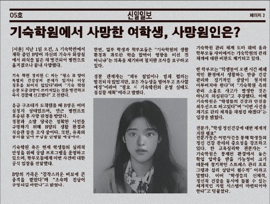
취조실에서 발견된 뉴스 기사에 따르면, 경비원이 화장실에서 조소민의 사체를 최초로 발견한 것으로 기록되어 있습니다. 기사에는 그녀가 평소 건강상 특별한 문제가 없었다는 증언도 함께 실려 있어, 그녀의 사망 원인은 자살 또는 타살일 가능성이 제기되며 이야기가 시작됩니다.
02
기숙학원 학생명부
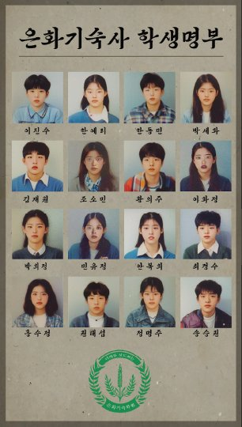
은화기숙학원의 기숙사 학생명부 입니다. 명부를 보면 조소민, 민유정, 이화정이 모두 이곳에 재학중이라는 사실을 알 수 있습니다.
03
민유정 방에서 발견된 소민의 소지품
민유정의 서랍 속에서 '소민'이라고 적힌 조소민의 빗이 발견되었습니다. 이는 민유정이 조소민에게 빼앗은 소지품으로, 이를 통해 평소 괴롭힘을 당하는 소민의 상황을 유추해볼 수 있습니다.
04
학원폭력 관련 공지문
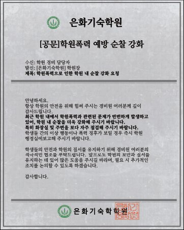
경비실에 게시된 은화기숙학원의 공지사항 문서에는 최근 기숙학원 내 학교폭력이 잦다는 내용이 포함되어 있습니다. 특히 화장실 점검을 강조한 부분으로 미루어, 평소 민유정과 이화정이 화장실에서 조소민을 자주 괴롭혔음을 유추할 수 있습니다.
05
화장실 안 낙서
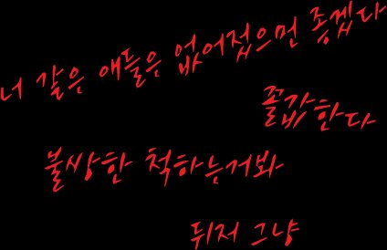
화장실 칸 안 벽에는 빨간 글씨로 조롱과 욕설이 적혀 있습니다. 이는 조소민이 민유정과 이화정에게 실제로 들었던 말들을 반영한 것으로, 그녀가 화장실에서 당한 괴롭힘의 상황을 시각적으로 표현하기 위한 연출입니다.
06
소민이 경비원에게 준 쪽지
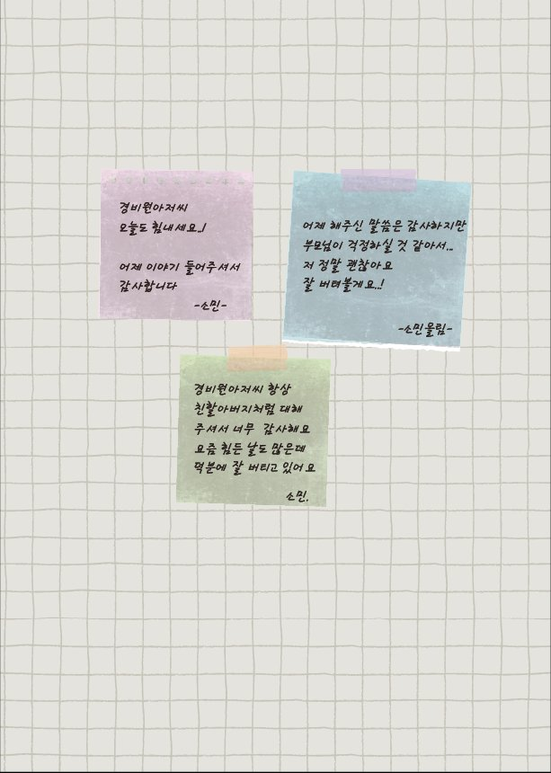
경비실 경비일지가 보관된 보관함에 붙어 있던 메모지입니다. 이를 통해 조소민과 경비원의 유대관계를 엿볼 수 있습니다. 조소민은 평소 경비원에게만 속마음을 털어놓으며, 서로에게 위로가 되는 관계였음을 알 수 있습니다.
07
세탁일지
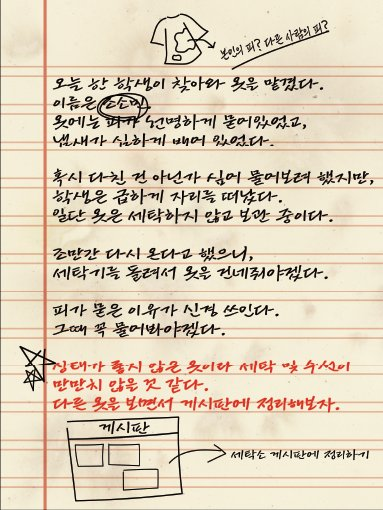
세탁일지를 보면 조소민이라는 학생이 피가 묻은 옷을 맡겼다라고 되어있습니다. 그 옷은 민유정에게 괴롭힘을 당하던 중 묻은 조소민의 피로, 이후 이 옷은 유정이 '죽은 자의 물건'을 찾는 중요한 단서가 됩니다.
08
경비원이 조작한 답변서
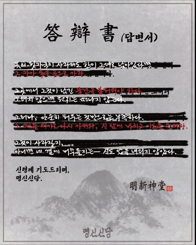
무당의 답변서 위에는 경비원의 글씨가 덧씌워져 있습니다. 이는 경비원이 기존에 무당이 작성한 답변 내용을 지우고, 그 위에 새로 써서 조작한 문서입니다. 그는 이 문서를 이용해 민유정과 이화정이 스스로 악귀를 불러오도록 유도했습니다.
09
명신신당 기록장
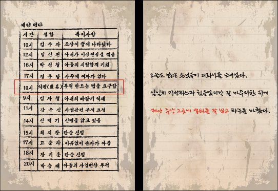
명신신당의 예약명단에는 19시에 익명의 사람이 부적 제작 방법을 알려 달라고 요청한 기록이 있습니다. 이 익명의 인물은 바로 경비원입니다. 마지막 장에는 경비원이 민유정과 이화정을 속이기 위해 무당인 척 작성한 글이 포함되어 있으며, 글씨체가 무당의 글씨체가 아닌 경비원의 글씨체임을 확인할 수 있습니다.
10
경찰 신고 접수증
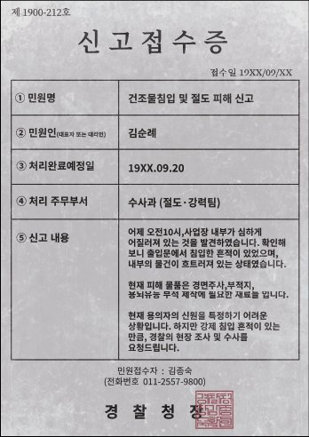
무당집 서랍 안에 보관된 문서로, 누군가 부적 제작에 필요한 도구를 훔쳐갔다는 내용의 경찰 신고서입니다. 이 사건의 범인은 경비원이며, 무당이 이를 경찰에 신고한 기록임을 알 수 있습니다.
11
경비원이 무당에게 의뢰한 의뢰서
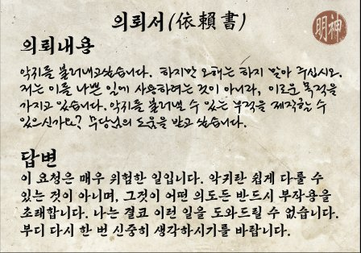
경비실 열쇠보관함에서 발견된 의뢰서는 경비원이 명신신당의 무당에게 의뢰한 내용이 들어있습니다. 내용에는 경비원이 귀신을 불러내고자 한 요청과, 이에 대해 무당이 위험하다는 이유로 거절한 답변이 포함되어 있습니다. 경비원은 이 답변을 받고, 무당의 도움 없이 스스로 영혼을 불러내기로 결심합니다.
12
경비원이 혼자 작성한 위조 의뢰서
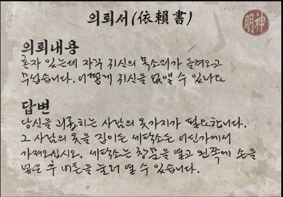
명신신당에서 발견된 의뢰서 중 하나는 글씨체가 경비원과 일치합니다. 다른 의뢰서의 답변자는 모두 동일한 글씨체를 사용하지만, 이 의뢰서는 무당의 글씨체가 아닌 경비원의 글씨체입니다. 즉, 무당이 작성한 것이 아니라 경비원이 민유정을 속이기 위해 위조한 의뢰서임을 알 수 있습니다.
13
경비실에 있던 부적과 민속신앙에 대한 책
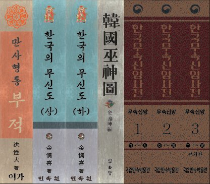
경비실 위쪽 책장에는 부적 제작과 관련된 서적들이 꽂혀 있습니다. 경비원은 무당에게 의뢰를 거절당한 뒤, 스스로 부적 제작법을 익혀 조소민의 영혼을 불러냈습니다. 이 책들은 그의 치밀한 준비 과정과 집념을 보여주는 연출 소품입니다.
14
경비일지
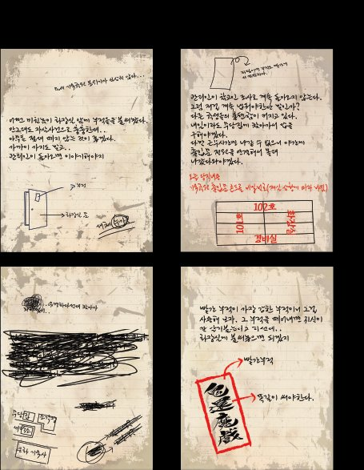
경비원의 일지를 보시면, '부적을 누가 붙였는가'에 대해 의문을 적어둔 내용이 나옵니다. 하지만 다른 페이지를 보면, 그 부적을 붙인 사람이 바로 경비원 본인이라는 사실을 확인할 수 있습니다. 윗쪽 페이지는 유정이 읽을 것을 예상하고 일부러 꾸며 쓴 내용이며, 펜으로 지운 흔적은 유정에게 들키지 않기 위한 삭제 흔적입니다. 일지의 마지막 페이지를 안 지우고 비상열쇠함에 붙여뒀습니다.
15
경비실 서랍 속 부적용품
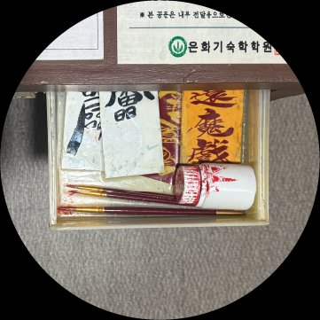
경비원의 서랍에서는 붓과 부적용 종이를 발견하셨나요? 바로 신당에서 훔친 부적을 쓰기 위한 재료들입니다. 화장실에 붙어 있던 부적들은 경비원이 직접 제작한, 귀신을 불러내는 부적입니다. 그 중 빨간 부적은 떼어내는 순간 효력이 발동되며, 민유정과 이화정은 경비원의 계획대로 그것을 떼어내고 말았습니다.
16
무당집 관 안의 옷걸이
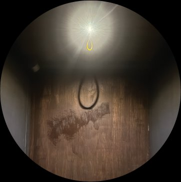
옷을 들고 무당집에 돌아왔을 때, 관 안의 빛에 비친 옷걸이의 그림자는 마치 목을 매는 줄처럼 보입니다. 이는 조소민의 마지막 순간을 떠오르게 하는 연출입니다.
Interview
3호점 오픈과 함께 첫 영화를 선보이셨습니다. 준비 과정에서 새로운 시도나 시행착오가 있었다면 어떤 것이었나요?
사실 이번 매장을 기획하면서 가장 큰 변화는 단순히 새로운 시도를 했다기보다는, 제작 성향 자체가 전환된 것이라고 말씀드리고 싶습니다. 이전 1, 2호점에서는 '내가 만들고 싶고, 또 내가 재밌는 테마'를 만드는 것이 최우선이었다면, 3호점에서는 '플레이어가 정말 재밌어하고 흥미로워 할 만한 요소'가 무엇일지에 대한 고민이 가장 크게 작용했습니다. 저 역시 방탈출을 즐기는 플레이어이지만, '나와 같은 플레이어라면 당연히 좋아할 것이다'라는 오만한 생각보다는, 보다 다수의 플레이어가 공감하고 흥미를 느낄 수 있는 이야기와 연출을 상상하고 고민하는 데 많은 시간을 할애했습니다. 물론, 이 과정에서 세부적인 연출이나 기술적인 측면에서 자잘한 시행착오를 많이 겪었지만, 결국 새로운 시네마틱 컨셉의 성공적인 시작을 위해 꼭 필요한 과정이었다고 생각합니다.
'악녀'라는 제목이 결국 누구를 가리키는가에 대한 해석이 다양합니다. 작가님은 '악녀'를 어떻게 정의하고 계신가요?
저는 반전이 있는 이야기를 좋아합니다. 민유정과 이화정의 시점으로 이야기를 따라가다 보면, 자연스럽게 그들을 괴롭히는 인물들이 악인처럼 보이죠. 하지만 전체를 돌아보면, 진짜 '악녀'는 그들 자신이었다는 사실을 깨닫게 됩니다. 이 지점이야말로 제가 가장 흥미롭게 느낀 부분이었습니다. 생각해보면 일상 속 대부분의 사람들은 스스로를 악인이라 생각하지 않습니다. 가해자가 기억하지 못하듯, 우리는 자신이 누군가에게 상처를 준 존재일 수도 있다는 사실을 종종 잊곤 하죠. 이 이야기는 '학교폭력'이라는 민감한 주제를 다루고 있지만, 제가 전하고자 한 핵심은 단순합니다. 결국 모든 일은 '내가 한 만큼 나에게 돌아온다'는 것. 이 작품을 통해, 각자가 그 말의 의미를 한 번쯤 곱씹어보게 되길 바랐습니다.
인테리어나 공간 연출에서 특별히 중점을 둔 부분이 있다면 무엇인가요?
시네마틱점의 가장 큰 강점으로 저희는 '배경 연출의 완벽함'을 꼽고 싶었습니다. 저희의 목표는 '작은 공간이든 큰 공간이든 허투루 사용하지 않는다'는 것이었습니다. 모든 공간이 스토리와 시대상에 기여할 수 있도록, 빈틈없이 밀도 높은 연출을 구현하고자 노력했습니다. 특히 테마의 시대상에 완벽히 어울리도록 건물들을 세밀하게 건축했으며, 모든 공간에 실제 사용되는 건축자재들을 활용하여 극도의 현실감과 몰입감을 제공하는 테마를 완성하는 데 중점을 두었습니다. 또한, 저희 건물은 높은 천장을 가지고 있다는 큰 장점이 있습니다. 아쉽게도 변경된 소방법으로 인해 복층 구조를 구현할 수는 없었지만, 이 시원한 개방감이야말로 플레이어분들이 마치 실제 영화 촬영 현장이나 광활한 장소에 와 있는 듯한 깊은 현장 몰입감을 느낄 수 있는 가장 강력한 무기라고 생각합니다.
경비원이 직접 행동하지 않고, 민유정과 이화정을 통해 모든 일이 벌어지게 만든 이유는 무엇인가요?
그는 복수를 '행동'이 아니라 '귀결'로 여긴 사람이었습니다. 단순히 해를 가하는 것은 순간의 감정일 뿐, 진정한 복수는 그들이 스스로 자신이 저지른 죄의 결과에 발을 들이게 하는 것이라고 믿었죠. 경비원은 악귀보다 무서운 것이 인간의 양심이라고 생각했습니다. 누군가의 손에 의해 심판받는 것이 아니라, 자신의 선택과 발걸음 끝에서 파멸을 맞이하는 것 — 그것이야말로 완전한 인과응보라고 여긴 겁니다.
쿠키영상에서는 과거의 한 장면이 등장합니다. 그 장면을 넣게 된 특별한 이유가 있을까요?
쿠키영상은 본편이 끝난 뒤, 관객을 다시 과거의 한 순간으로 되돌려 놓습니다. 유정과 화정이 조소민을 괴롭힌 뒤 복도에서 나누는 대화 장면이 등장하죠. 화정이 "왜 그녀를 싫어하냐"고 묻자, 민유정은 잠시 생각하다가 "왜 그랬더라?"라고 중얼깁니다. 저는 그 한마디에 담긴 서늘함이 관객에게 그대로 전해지길 바랐습니다. 누군가는 이유 없이 괴롭힘을 당하고, 누군가는 그 이유조차 기억하지 못합니다. 이 짧은 영상이 전하고자 한 메시지는 단순합니다 — 가해자의 기억은 쉽게 지워질 수 있어도, 피해자의 상처는 결코 사라지지 않는다는 것.
마지막으로, [악녀]를 관람해주신 관객 여러분께 한 말씀 부탁드립니다.
러시아워 시네마틱은 방탈출이라는 장르 안에서 단지 문제를 푸는 경험이 아니라, 그 안에 담긴 감정과 이야기, 그리고 기억에 남는 순간을 전하고 싶다는 마음에서 출발했습니다. 무언가 단순히 "재밌다"로 끝나는 것이 아니라, 끝난 뒤에도 문득 떠오르는 장면과 감정 — 당신이 직접 체험한 그 이야기의 흐름이 여운으로 남길 바랐습니다. 이 방탈출이라는 장르가 단순한 유흥거리를 넘어, 당신의 일상에 녹아드는 경험이 되길 바랍니다. 찾아와주셔서 진심으로 감사합니다. 여러분의 시간이 아깝지 않도록, 다음 이야기도 정성껏 준비하고 있겠습니다. 그날이 오면, 다시 한 번 당신을 영화의 주인공으로 초대하겠습니다.
RUSHHOUR CINEMATIC
© Rushhour Cinematic. Designed by 최서연
Printed in Korea / 2025